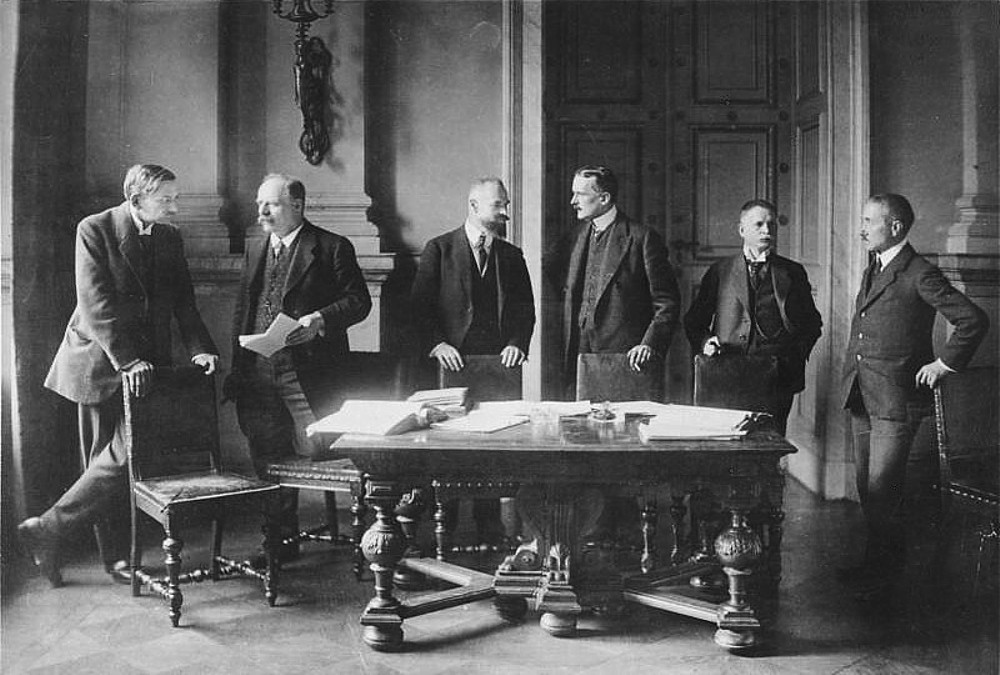
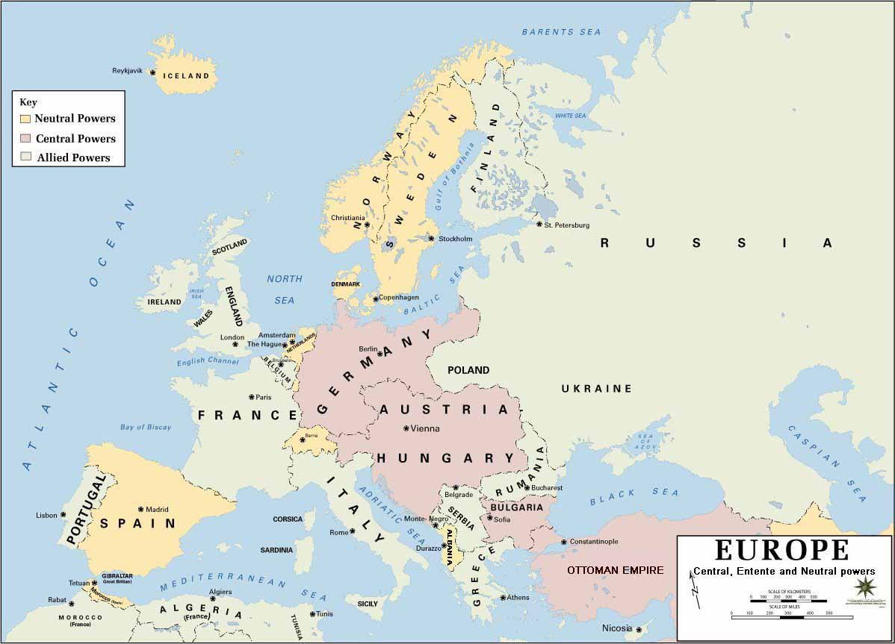
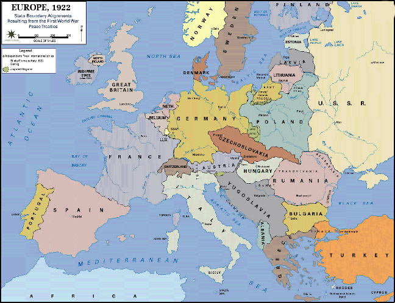
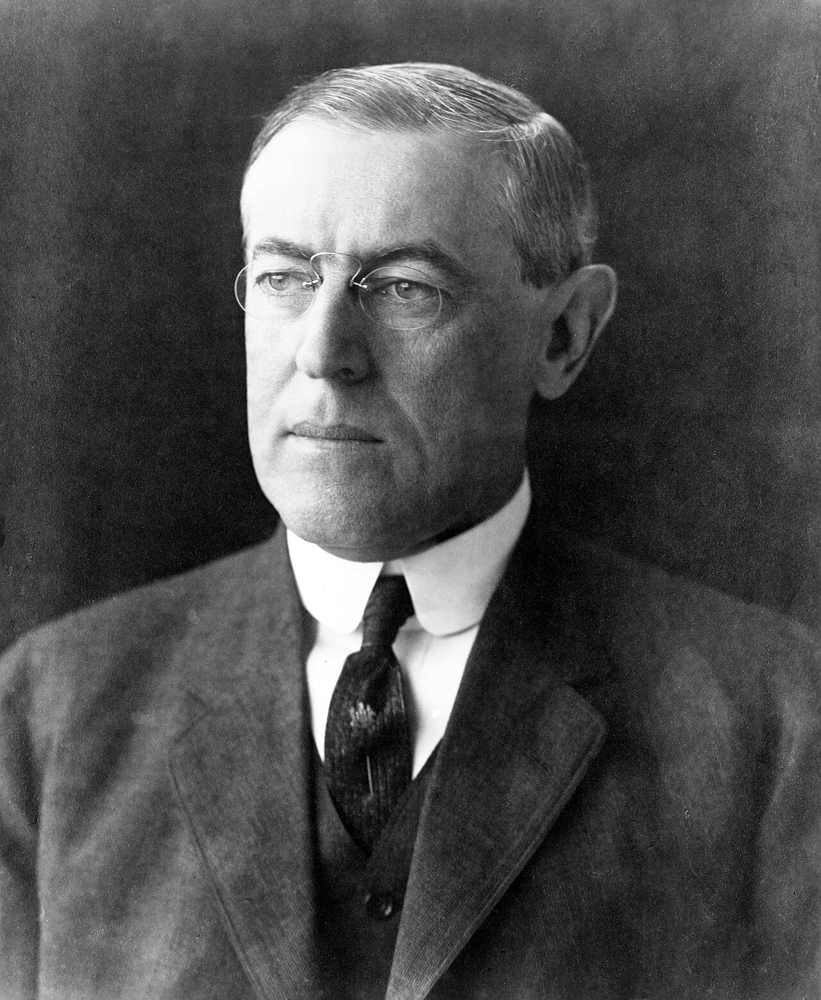
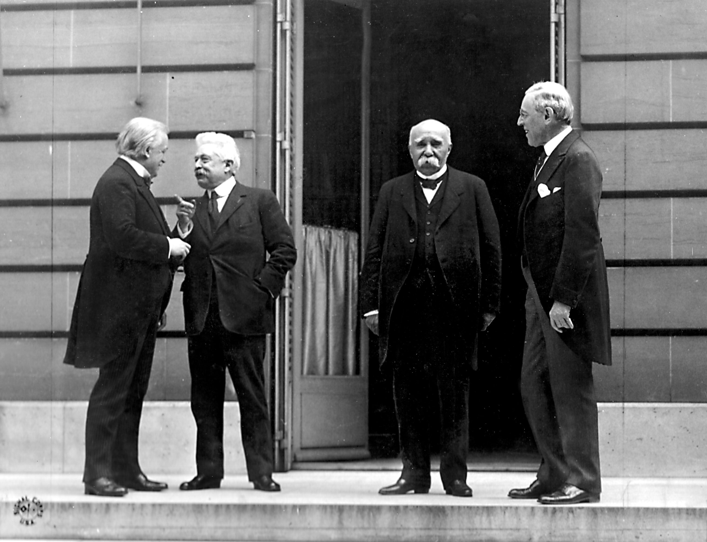
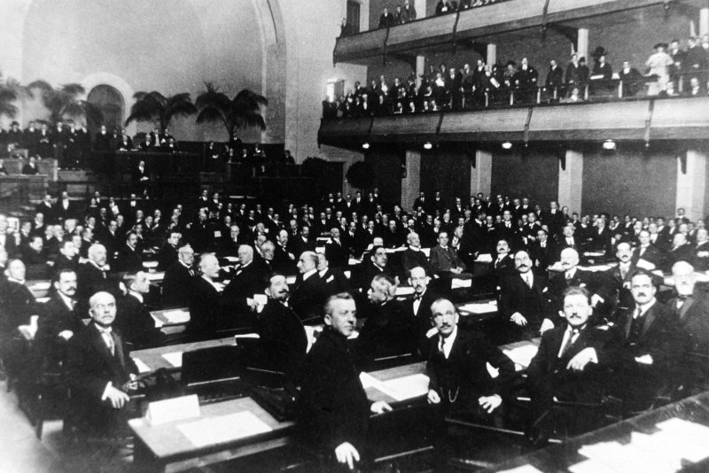
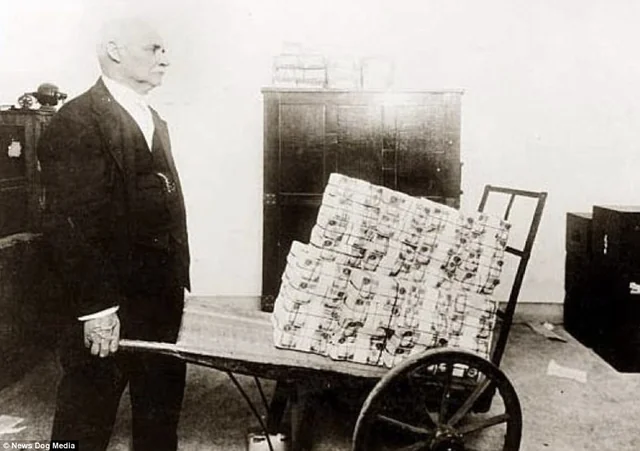
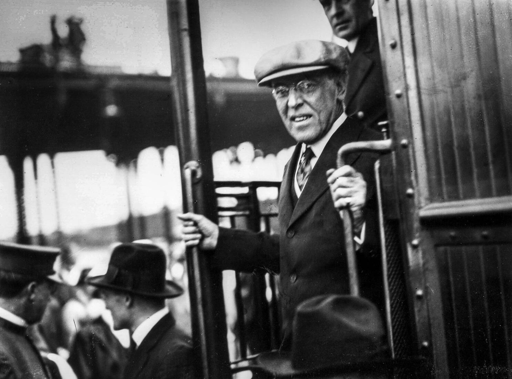
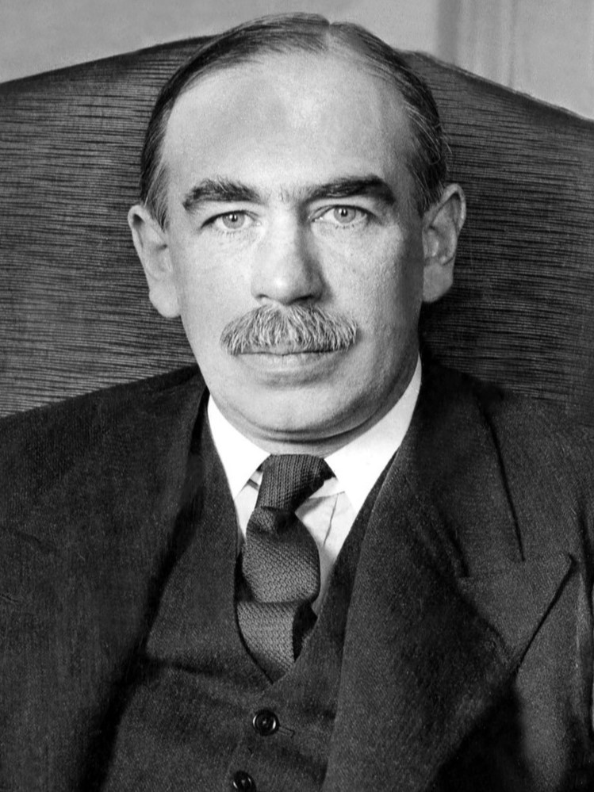
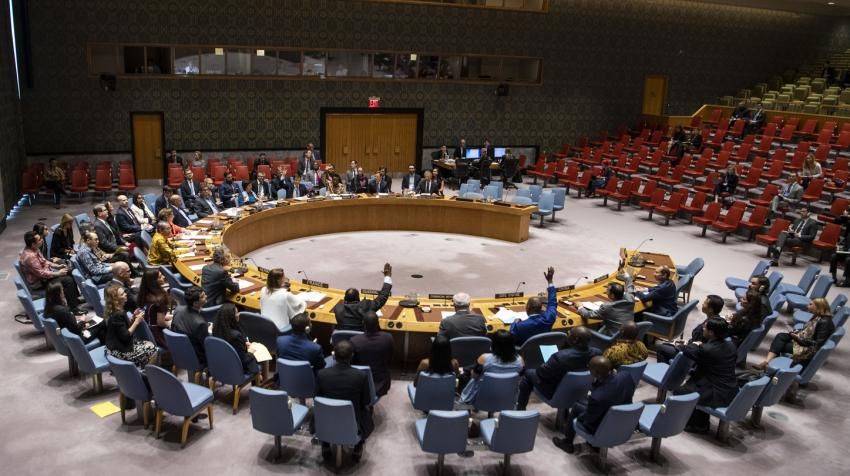

The Failed Peace
After WWI
In November 1918, a German soldier named Georg Bucher put down his rifle and walked home. The war was over. Four years of mud, poison gas, and machine guns had killed ten million soldiers and left Europe in ruins. Georg thought the killing was finally done. He was wrong.
The leaders who gathered in Paris to write the peace agreement made choices that would hurt millions of people for decades. They drew new borders on maps without asking the people who lived there. They charged one country a debt so large it could never be paid. They built an organization meant to keep the peace but left it without any real power.
What happened in Paris in 1919 did not end the war. It restarted the clock on an even bigger one.
The Treaty of Versailles: Germany Pays the Bill
The leaders of France, Britain, and the United States met in the Palace of Versailles outside Paris in January 1919. Germany was not invited. The winners of the war were going to decide everything.

France wanted Germany to suffer. France had been invaded twice by Germany in fifty years. French General Ferdinand Foch was furious with the final treaty. He called it "not a peace, but an armistice for twenty years." He was almost exactly right.
The treaty forced Germany to accept three major punishments. First, the war guiltWar guilt: the official blame placed on Germany for starting WWI, written into Article 231 of the treaty. clause. Article 231 of the treaty said Germany was responsible for starting the entire war. Germany had to sign a document saying this was true, even though many historians argue the causes were more complicated. This humiliation burned deep into German national pride.
Second, Germany had to pay reparationsReparations: money a country must pay to make up for damage caused during a war.. The final bill set in 1921 was 132 billion gold marks. That is roughly $500 billion in today's money. Germany's economy was already destroyed by the war. This debt was nearly impossible to pay.
Third, Germany lost territory on every border. The map of Europe was redrawn. Germany gave up land to France, Poland, Denmark, and Belgium. German-speaking people suddenly found themselves living in new countries they had never chosen.


The German government had to sign the treaty or face a full military invasion. They signed. But they never forgot the humiliation. A generation of Germans grew up believing their country had been cheated. That anger would have consequences.
- Question 1: Meaning In your own words, what does Article 231 say Germany must admit? Why would this feel unfair to many Germans?
- Question 2: Connect to the EQ How might a sentence like this one plant the seeds for a future war?
Wilson's Dream: Fourteen Points vs. What Actually Happened

American President Woodrow Wilson arrived in Paris with a plan. He called it the Fourteen Points. It was his vision for a peaceful world after the war. Wilson believed that if nations treated each other fairly, there would be no reason to fight again.
One of his most important ideas was self-determinationSelf-determination: the idea that people of the same culture or nationality should be allowed to choose their own government and borders.. Wilson believed every group of people should have the right to form their own country. Poles should have Poland. Czechs should have Czechoslovakia. No empire should rule over people who did not want to be ruled.
But Wilson's fourteen points ran into a hard wall in Paris. France and Britain had their own goals. They wanted colonies, territory, and revenge. When the final treaty was written, most of Wilson's ideals were weakened or removed entirely.
| Wilson Wanted | What Actually Happened |
|---|---|
| Self-determination for all peoples | Applied in Europe but ignored in Africa and Asia, where Britain and France kept their colonies |
| No punishing reparations | Germany charged 132 billion gold marks in debt |
| Freedom of the seas | Britain continued to dominate the world's shipping lanes |
| Open peace agreements, no secret deals | Major decisions were made in closed rooms by four leaders |
| A League of Nations to keep the peace | The League was created but had no army and no real power to enforce anything |
Wilson went home from Paris a broken man. He had traded most of his ideals away just to get the League of Nations included in the treaty. Even that victory would soon fall apart.
People in Asia and Africa who had hoped Wilson's words meant freedom for them felt the deepest disillusionmentDisillusionment: the feeling of disappointment when something you believed in turns out not to be true.. Ho Chi Minh, a young Vietnamese man living in Paris, tried to deliver a petition asking for Vietnamese independence. No one would meet with him. He would spend the rest of his life fighting against colonial powers. His name would eventually fill American history books too.

The League of Nations: A Blueprint Without a Builder
The one idea Wilson refused to give up was the League of NationsLeague of Nations: an international organization created after WWI to solve disputes between countries and prevent future wars.. He believed that if all nations joined together and agreed to solve problems peacefully, war could be avoided forever. It was a powerful idea. It just had one enormous problem.

The United States never joined. Wilson brought the treaty home and asked the Senate to approve it. The Senate said no. Some senators worried the League would drag America into foreign wars. Others just did not want Wilson to win a political victory. The final vote failed twice.
Wilson traveled the country by train making speeches, trying to convince the American public to pressure their senators. The campaign destroyed his health. In October 1919, he suffered a massive stroke and was partially paralyzed for the rest of his life. The Senate rejected the treaty one final time in March 1920. The United States stayed out.
The League was born without its most powerful potential member. It had no army. It had no way to force nations to follow its decisions. When aggressive countries later tested it, the League had no real answer. Wilson's great dream became a hollow institution.
Senator Henry Cabot Lodge led the opposition. He worried that Article 10 of the League's charter required the U.S. to defend any member nation that was attacked. He believed Congress, not the League, should decide when America went to war. Many Americans agreed. After losing 116,000 soldiers in a war that felt like Europe's problem, they wanted to stay out of international commitments.
Think about what this means today: the United Nations, created after World War II, was built specifically to fix the League's weaknesses. The U.S. is a founding and permanent member of the UN Security Council. The lesson of what happened when the U.S. stayed out shaped the entire post-WWII world order.
A Broken World: Anger, Debt, and Shattered Trust
By 1920, the world that existed before the war was gone. Four empires had collapsed: the German, Austro-Hungarian, Russian, and Ottoman empires. New countries had appeared on the map. Old certainties were destroyed. And millions of people felt lied to.

Germany's economy collapsed under the weight of reparations. By 1923, German money was worth almost nothing. A loaf of bread cost billions of marks. People burned banknotes for heat because it was cheaper than buying firewood. Middle-class families who had saved money their whole lives were wiped out overnight.
Across Europe, young men came home from the trenches and found no jobs, no stability, and no respect. They had been told the war was noble. They had watched their friends die in the mud. Now they returned to broken economies and politicians who could not explain why any of it had been worth it. This disillusionment ran deep.

Writers and artists called this feeling the "Lost Generation." Soldiers came back and could not reconnect with the world they had left. Some drank. Some left for Paris. Some wrote novels about the emptiness. Ernest Hemingway, F. Scott Fitzgerald, and poet Wilfred Owen all captured this feeling in their work. The trauma of the war did not end when the guns went quiet.
The old institutions that Europeans had trusted before the war were now suspect. Emperors were gone. The church seemed unable to explain the slaughter. Democratic governments appeared weak. Into that empty space, new and dangerous political movements began to grow. They promised strength, pride, and revenge. Germany was listening.


San Diego was already home to a growing U.S. Navy base when WWI ended in 1918. The Treaty of Versailles and the growth of the U.S. military during the war permanently accelerated San Diego's transformation into one of the most important military cities in the country. Camp Kearny, opened in 1917 just north of San Diego, trained tens of thousands of soldiers for the Western Front.
The failure of the peace and the rise of global instability in the 1920s and 1930s would push more military investment into San Diego. The very reasons the Versailles peace failed, including unresolved power struggles and a broken international order, are part of the story of why military San Diego grew into what it is today.

- "How the Treaty of Versailles and German guilt led to World War II" — BBC History
- "100 Years Later, Historians Debate the Legacy of the Treaty of Versailles" — NPR
- "Treaty of Versailles at 100: The Peace That Never Was" — The Guardian
The United Nations exists because the League of Nations failed. The rules that govern how countries treat each other after wars, including requirements to rebuild rather than just punish, exist because of what went wrong at Versailles. When you hear debates about rebuilding Iraq, or handling conflict in Ukraine, or writing sanctions against countries, you are watching the same questions play out that first appeared in Paris in 1919.
If you had been a German citizen in 1920 watching your savings disappear, your borders shrink, and your country forced to sign a statement of guilt for a war still not fully understood, what would you have believed about your government, your future, and the people who wrote that treaty?